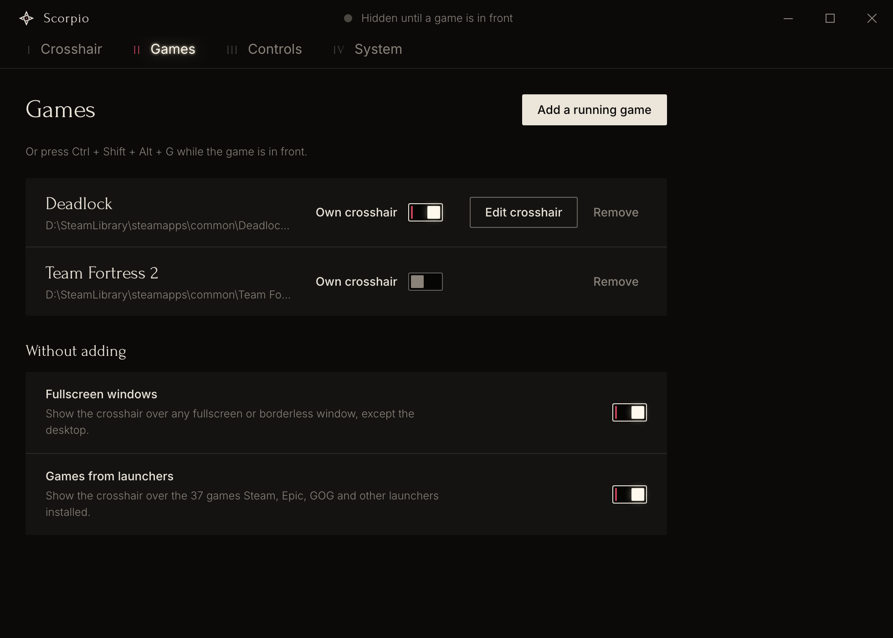
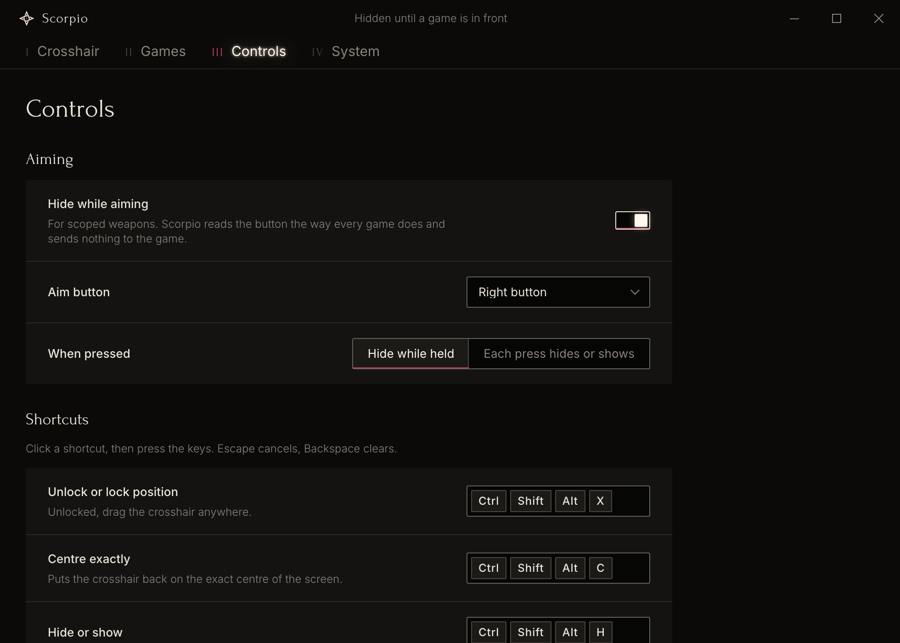

Only over games
The crosshair shows while a game is the window in front and hides when you switch away. A game is a window you added, any fullscreen window, or a game from a launcher such as Steam, Epic Games or GOG.
It can also hide while you aim, and global shortcuts lock, centre and switch it.

The crosshair
CS2 crosshair codes work in Scorpio: paste a share code, or copy yours. CS2-based crosshairs come in five static styles, with thickness in half steps and an outline of 1 to 6 pixels.
Keep your own crosshairs, pick one of 13 pro players, or give each game its own.

On stream
Game Capture records only the game, so add Scorpio as a Browser source.
- In Scorpio, on the System tab, switch on Show the crosshair in OBS.
- In OBS, add a Browser source above your game capture.
- Set its URL to
http://127.0.0.1:47117/obs. - Make it the size of your canvas, with no transform.

Outside the game
Scorpio never opens another process, reads or writes its memory, injects code, installs a hook, sends synthetic input, loads a driver, or draws into the game's frames.
| Need | Windows | Linux (X11) | Why it stays outside the game |
|---|---|---|---|
| Window in front | SetWinEventHook, out of context | _NET_ACTIVE_WINDOW events | Nothing is loaded into another process |
| Title, class and size | GetWindowTextW, GetClassNameW, GetWindowRect | Window manager properties | No process is opened |
| Program path | NtQuerySystemInformation | /proc/<pid>/exe | No process handle |
| Aim button, hide key | Raw Input on its own window | XInput2 raw events | No hooks |
| Shortcuts | RegisterHotKey | XGrabKey | The standard shortcut API |
| The crosshair | A layered, topmost, click-through window | An override-redirect ARGB window | Nothing is drawn into the game |
| OBS, opt-in | HTTP on 127.0.0.1:47117 | The same | Your own computer only |
Is a crosshair overlay bannable?
No overlay can promise that you will never be banned. Scorpio never reads or changes the game, but a game's own rules can forbid external crosshairs.
Does it work with Vanguard, Easy Anti-Cheat, BattlEye or VAC?
None of them has approved it directly. Scorpio crosses none of their lines, since it never touches the game or the anti-cheat. The exception is a game whose own rules forbid crosshair overlays.
Does Scorpio lower my frame rate?
It does not touch the game or its input. Its effect on the frame rate has not been measured yet.
Does Scorpio collect data?
No. It has no telemetry and no account, and goes online only for updates from GitHub.
Download
- On Windows 10 or 11, run the
-setup.exe. It needs no administrator rights; it is unsigned, so SmartScreen may warn you the first time. - On Linux with X11 or XWayland, run the
.AppImage, orsudo apt install ./Scorpio_*.deb. - Click the tray icon, paste a share code, and switch to your game.
Free for non-commercial use under the PolyForm Noncommercial 1.0.0 licence. The source is on GitHub.
Open the latest release